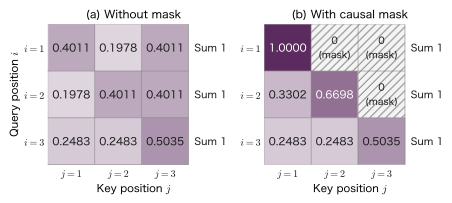
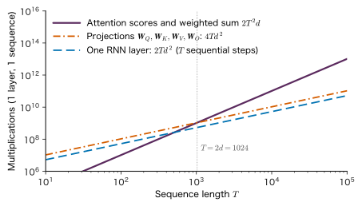

Chapter 24How Attention Works — Gathering Relevant Information with Weights
- In the sentence “The sample was fired at 1200 °C, and it cracked,” the word “it” refers to the sample. How much information should be taken from which words in the sentence to build a vector representing the meaning of “it”?
- By what formula is the proportion (the weight) in which each token gathers information from the other positions of the sequence computed, and why do the weights sum to 1? Why do we divide by $\sqrt{d_k}$?
- For a model that predicts the next token not to peek at “future words that have not yet been written,” what must be changed in the computation?
When we look up a word in a dictionary, we pull out the explanation (value) of just one entry whose headword (key) matches exactly the word we want to look up (the query). What should we do, then, when no headword matches exactly? A natural answer is to look for similar headwords and read their explanations blended according to how similar they are. Measure the degree of similarity by a dot product, turn it into weights with softmax, and take a weighted average of the values. This is the attention of this chapter (the attention mechanism: a mechanism that decides where, and how much, to “pay attention” in order to gather information). As we saw in Chapter 23, an RNN reads a sequence in order while squeezing its information into a single hidden state, so information about distant words tends to fade, and the computation cannot be parallelized. In attention, each position looks directly at all positions of the sequence and gathers just as much information as it needs from just the places it needs.
In this chapter we start from the “soft dictionary lookup” by query, key, and value, and build up in the following order: the formula and matrix shapes of scaled dot-product attention, a hand calculation of a numerical example with $T=3$, the reason for dividing by $\sqrt{d_k}$, self-attention, which makes query, key, and value from the same sequence, the causal mask, which hides the future, and multi-head attention. We then discuss the fact that self-attention knows nothing about word order (permutation equivariance), the computational cost, and cautions on how to read attention weights, and we close with applications to sets of atoms and to composition. Every numerical example can be checked, with the same values, in the simulator embedded in this chapter.
- You can explain the roles of query, key, and value as a “soft dictionary lookup.” (Detailed route) You can show the relation to kernel regression (a weighted average) by a formula.
- You can state the shape of each matrix in scaled dot-product attention $\softmax(\bm{Q}\bm{K}^{\tp}/\sqrt{d_k})\bm{V}$, and explain along which axis softmax is taken (along each row, in the direction of the keys).
- You can compute the scores, weights, and output by hand in the example with $T=3$ and $d_k=2$.
- You can derive that the variance of the dot product is proportional to $d_k$, and show numerically that without dividing by $\sqrt{d_k}$, softmax saturates and the gradient becomes small.
- You can write self-attention and the causal mask as formulas, and verify that the row sums remain 1 even after the mask is applied.
- You can count the matrix shapes and the number of parameters of multi-head attention.
- You can prove that self-attention is permutation equivariant, and explain why positional information is needed separately.
- You can explain the meaning of the computational cost $O(T^{2}d)$ by comparison with RNNs, and show by an example the danger of reading attention weights as “the reason for a decision.”
Sections for the introductory route: 24.1, 24.2, 24.3, 24.5, 24.6, 24.7, 24.13. Sections marked “Detailed Route” may be skipped on a first reading.
Notation: Symbols Used in This Chapter
In Chapters 24–26, following the original Transformer paper (Vaswani et al. (2017)), we use matrices whose rows are the elements of a sequence. For a sequence of length $T$, we transpose the vector $\bm{x}_t\in\R^{d_{\mathrm{model}}}$ (a column vector) at each position $t=1,\dots,T$ and place it in the $t$th row; the resulting matrix is written $\bm{X}\in\R^{T\times d_{\mathrm{model}}}$. A linear transformation is multiplied from the right ($\bm{X}\bm{W}$). This is related by a transpose to the convention up to Chapter 14, “multiply a column vector by a matrix from the left” ($\bm{W}\bm{x}$), and since $(\bm{W}\bm{x})^{\tp}=\bm{x}^{\tp}\bm{W}^{\tp}$, the content is the same. Section 16.9 of Chapter 16 wrote query, key, and value in terms of column vectors, $\bm{q}_i=\bm{W}_Q\bm{h}_i$, but $\bm{W}_Q$ in this chapter corresponds to the transpose of that matrix.
Some letters have different meanings in other chapters: $\bm{K}$ is a Gram matrix in Chapters 10 and 12 but the matrix of keys in this chapter; $\bm{A}$ is a transition matrix in Chapter 22 but the matrix of attention weights in this chapter; $\bm{Z}$ and $\bm{z}$ are, in this chapter, the output of attention, not the output of a hidden layer of Chapter 14 or the latent variables of Chapter 17; and $\bm{V}$ is the matrix of values and is distinct from the vocabulary size $V_{\mathrm{voc}}$. $T$ is the sequence length (not the temperature). The numerical examples are dimensionless quantities.
24.1 A Soft Dictionary Lookup — Query, Key, and Value
24.1.1 What we want to do
Consider the sentence “The sample was fired at 1200 °C, and it cracked,” and suppose we want to build a representation at the position of the word “it.” The vector of the word “it” alone does not tell us what it refers to. We must take in information from the other words in the sentence, especially from “sample.” On the other hand, the information from “1200” and “fired” is hardly needed here. In other words, we want to change, position by position, “from where and how much information to gather.”
We compare this to a dictionary lookup (Figure 24.1). Each entry of a dictionary is a pair consisting of a headword (key) and its content (value). We compare the thing we want to look up (the query) with the headwords, and
- an ordinary dictionary lookup (a hard dictionary lookup): returns only one value, that of the headword that matches the query.
- a soft dictionary lookup: turns the degree of similarity between the query and each key into a number, converts these numbers into weights that sum to 1, and returns the weighted average of the values.
A soft dictionary lookup returns an answer even when no headword matches, and because the weights are smooth functions of the query and the keys, it can be learned by differentiation. This is the core of attention.
24.1.2 Definition: attention for a single query
Suppose we have one query and $T_k$ pairs of a key and a value. The query and the keys are vectors of the same dimension $d_k$, and the values are vectors of dimension $d_v$ ($d_k$ and $d_v$ may differ).
Definition 24.1: Attention for a single query
For a query $\bm{q}\in\R^{d_k}$, keys $\bm{k}_1,\dots,\bm{k}_{T_k}\in\R^{d_k}$, and values $\bm{v}_1,\dots,\bm{v}_{T_k}\in\R^{d_v}$,
\begin{equation} \begin{aligned} a_j&=\frac{\exp(s_j)}{\sum_{j'=1}^{T_k}\exp(s_{j'})},\\ \bm{z}&=\sum_{j=1}^{T_k}a_j\,\bm{v}_j\in\R^{d_v} \end{aligned} \label{eq:24-single} \end{equation}is called the attention output for the query $\bm{q}$. Here $s_j$ is the score (degree of similarity) between the query and the key $\bm{k}_j$; in this book we use the dot product divided by $\sqrt{d_k}$, $s_j=\bm{q}^{\tp}\bm{k}_j/\sqrt{d_k}$ (the reason for dividing is given in Section 24.4; in the examples of Section 24.1, for simplicity, we do not divide and use $s_j=\bm{q}^{\tp}\bm{k}_j$). We call $a_j$ the attention weight.
The weight $a_j$ is the softmax of the scores (Chapter 9, Section 9.5), and it has the following three properties.
- $a_j\gt0$ and $\sum_ja_j=1$. The output $\bm{z}$ is a convex combination of the values (a weighted average whose weights are nonnegative and sum to 1), and lies “between” the values.
- The larger the score of a key, the larger its weight. The larger the differences between the scores, the more the weight concentrates on the key with the largest score.
- Adding the same number to all the scores does not change the weights (the numerator and the denominator are multiplied by the same factor).
Example 24.1: Computing a soft dictionary lookup by hand
There are three pairs of a key and a value: $\bm{k}_1=(1,0)^{\tp}$, $v_1=2.0$; $\bm{k}_2=(0,1)^{\tp}$, $v_2=4.0$; $\bm{k}_3=(1,1)^{\tp}$, $v_3=3.0$ (the values are one-dimensional, $d_v=1$). The query is $\bm{q}=(1.5,0.5)^{\tp}$. (1) Find the scores $s_j=\bm{q}^{\tp}\bm{k}_j$, the weights $a_j$, and the output $z$. (2) Compare the result with the answer of a hard dictionary lookup (which returns the value with the largest score). (3) Multiply the scores by $c$, with $c=3$ and $c=10$, and find the weights and the output; state what they approach as $c\to\infty$.
Solution. (1) The dot products are $s_1=1.5\times1+0.5\times0=1.5$, $s_2=1.5\times0+0.5\times1=0.5$, $s_3=1.5+0.5=2.0$. Taking exponentials gives $e^{1.5}=4.4817$, $e^{0.5}=1.6487$, $e^{2.0}=7.3891$, and the sum is $13.5195$. Hence
$$ \begin{aligned} (a_1,a_2,a_3)&=\Bigl(\tfrac{4.4817}{13.5195},\ \tfrac{1.6487}{13.5195},\ \tfrac{7.3891}{13.5195}\Bigr)\\ &=(0.3315,\ 0.1220,\ 0.5465). \end{aligned} $$The output is
$$ \begin{aligned} z&=0.3315\times2.0+0.1220\times4.0\\ &\quad+0.5465\times3.0\\ &=0.6630+0.4878+1.6397\\ &=2.7905 . \end{aligned} $$
(2) The largest score belongs to $\bm{k}_3$, so the answer of the hard dictionary lookup is $v_3=3.0$. The soft dictionary lookup also mixes in the other entries with weights $0.33$ and $0.12$, so it gives $2.79$.
(3) For $c=3$ the scores become $(4.5,1.5,6.0)$, the weights are $(0.1808,\ 0.0090,\ 0.8102)$, and the output is $2.828$. For $c=10$ the weights are $(0.0067,\ 0.0000,\ 0.9933)$ and the output is $2.993$. Since the differences between the scores are magnified $c$-fold, the weight of the largest score approaches 1, and as $c\to\infty$ the output approaches the answer $3.0$ of the hard dictionary lookup. The soft dictionary lookup is a smoothed version of the hard dictionary lookup (softmax is the “smooth position of the maximum”).
24.1.3 Kernel regression is a kind of attention
This section is a supplement for readers who have read kernel regression in Chapter 10, Section 10.8 (detailed route). You can skip it without any difficulty in understanding Section 24.2 and later. The Nadaraya–Watson kernel regression of Chapter 10, Section 10.8 averaged the observed values near the point $\bm{x}_*$ we want to predict, with weights according to closeness.
$$ \begin{gathered} f(\bm{x}_*)=\sum_{n=1}^{N}w_n(\bm{x}_*)\,y_n,\\ w_n(\bm{x}_*)=\frac{k(\bm{x}_*,\bm{x}_n)}{\sum_{m}k(\bm{x}_*,\bm{x}_m)} \end{gathered} $$This has the same form as Eq. \eqref{eq:24-single}. The correspondence is: query $=\bm{x}_*$ (the point we want to predict), key $=\bm{x}_n$ (an observed input), value $=y_n$ (the observed value), and weight $=w_n$. If we use an RBF-type window $k(x_*,x_n)=\exp\!\bigl(-(x_*-x_n)^{2}/(2\ell^{2})\bigr)$, then the score defined by $k=\exp(s_n)$ is $s_n=-(x_*-x_n)^{2}/(2\ell^{2})$ (in the one-dimensional case).
Derivation: Rewriting the distance score as a dot-product score
We expand the square.
$$ \begin{aligned} s_n&=-\frac{(x_*-x_n)^{2}}{2\ell^{2}}\\ &=-\frac{x_*^{2}}{2\ell^{2}}+\frac{x_*x_n}{\ell^{2}}-\frac{x_n^{2}}{2\ell^{2}} . \end{aligned} $$The first term $-x_*^{2}/(2\ell^{2})$ does not depend on $n$. Since softmax is unchanged when the same number is added to all the scores, this term does not affect the weights. What remains is
\begin{equation} s_n\ \to\ \underbrace{\frac{x_*}{\ell}\cdot\frac{x_n}{\ell}}_{\text{dot product}}\ \underbrace{-\ \frac{x_n^{2}}{2\ell^{2}}}_{\text{constant for each key}} \label{eq:24-nw} \end{equation}which is a score obtained by adding a constant, determined for each key, to the dot product of the query $x_*/\ell$ and the key $x_n/\ell$.
∎
In other words, kernel regression is “attention whose scores are determined by distance and which has no parameters to learn.” Attention generalizes this in the following two respects. (1) It measures the score by a dot product and builds the query, key, and value by learned linear transformations (Section 24.5). What counts as “similar” is learned from the data. (2) It makes the value a vector rather than a scalar, and uses the output as the input of the next layer. Figure 24.2 shows kernel regression, regarded as attention, fitted to the 12 points of data A (firing temperature and relative density; synthetic data for teaching purposes) with different window widths $\ell$. When $\ell$ is small, the differences between the scores are large and the weight concentrates on the one or two nearest points (the same as making $c$ large in Example 24.1).
![The left panel plots the normalized temperature s on the horizontal axis and the relative density on the vertical axis, showing 12 observation points and the prediction curves of kernel regression with window widths ell of 0.05, 0.15, and 0.5. For ell = 0.05 the curve is staircase-like, for ell = 0.5 it is flattened out, and ell = 0.15 is in between. The right panel shows, as bars, the weight of each observation point for the query s* = 0.3; the point near 0.33 has the largest weight, 0.36, and only a few nearby points have large weights.](figs/ch24_fig24-2.svg)
24.2 Scaled Dot-Product Attention — The Formula and the Shapes of the Matrices
24.2.1 Computing many queries at once
In a sequence, every position has its own query and gathers information at the same time. Suppose there are $T_q$ queries and $T_k$ pairs of a key and a value. Arranging them in rows, we write the matrices as
$$ \bm{Q}=\begin{pmatrix}\bm{q}_1^{\tp}\\ \vdots\\ \bm{q}_{T_q}^{\tp}\end{pmatrix},\quad \bm{K}=\begin{pmatrix}\bm{k}_1^{\tp}\\ \vdots\\ \bm{k}_{T_k}^{\tp}\end{pmatrix},\quad \bm{V}=\begin{pmatrix}\bm{v}_1^{\tp}\\ \vdots\\ \bm{v}_{T_k}^{\tp}\end{pmatrix} $$(the $i$th row is the $i$th query, and the $j$th row is the $j$th key and value). Their shapes are $\bm{Q}\in\R^{T_q\times d_k}$, $\bm{K}\in\R^{T_k\times d_k}$, and $\bm{V}\in\R^{T_k\times d_v}$.
Definition 24.2: Scaled dot-product attention
For $\bm{Q}\in\R^{T_q\times d_k}$, $\bm{K}\in\R^{T_k\times d_k}$, and $\bm{V}\in\R^{T_k\times d_v}$,
\begin{equation} \begin{aligned} &\mathrm{Attention}(\bm{Q},\bm{K},\bm{V})\\ &\quad=\softmax\!\left(\frac{\bm{Q}\bm{K}^{\tp}}{\sqrt{d_k}}\right)\bm{V} \end{aligned} \label{eq:24-attn} \end{equation}is called scaled dot-product attention (its shape is $T_q\times d_v$). Here the softmax is taken for each row, along the column direction. That is, let $\bm{S}=\bm{Q}\bm{K}^{\tp}/\sqrt{d_k}\in\R^{T_q\times T_k}$ (the matrix of scores), $\bm{A}=\softmax(\bm{S})\in\R^{T_q\times T_k}$ (the matrix of weights), and $\bm{Z}=\bm{A}\bm{V}$ (the output). Then the components are as follows.
Eq. \eqref{eq:24-out} holds for each $i=1,\dots,T_q$. The denominator of Eq. \eqref{eq:24-weight} is a sum over $j'$ (in the direction of the keys). Therefore each row of the weight matrix $\bm{A}$ sums to 1: $\sum_{j}A_{ij}=1$. Each row is a distribution of “the weights that query $i$ hands out to the keys,” and Eq. \eqref{eq:24-out} is nothing but Eq. \eqref{eq:24-single} written out row by row ($a_j$ in Definition 24.1 corresponds to $A_{ij}$ in the row of query $i$). The columns do not necessarily sum to 1 (if a key receives attention from many queries, the sum of its column becomes large).
24.2.2 Tracking the shapes of the matrices
Figure 24.3 summarizes the flow of the computation and the shape of each matrix. There are three key points in tracking the shapes.
- $\bm{Q}\bm{K}^{\tp}$ has shape $(T_q\times d_k)(d_k\times T_k)=T_q\times T_k$. Unless the dimensions $d_k$ of the query and the key agree, the dot product cannot be taken.
- The softmax does not change the shape (it remains $T_q\times T_k$). Each row becomes a distribution over the keys.
- $\bm{A}\bm{V}$ has shape $(T_q\times T_k)(T_k\times d_v)=T_q\times d_v$. The output has as many rows as there are queries, and its columns have the dimension of the values. The numbers of keys and values, $T_k$, must agree, but this number does not appear in the output.
Example 24.2: Shapes and the number of multiplications
Let $T_q=4$, $T_k=6$, $d_k=8$, and $d_v=5$. (1) Answer the shapes of $\bm{S}$, $\bm{A}$, and $\bm{Z}$. (2) Count the multiplications needed to compute $\bm{Q}\bm{K}^{\tp}$ and $\bm{A}\bm{V}$. (3) How many times is $\exp$ evaluated in the softmax? (4) What is the sum of all components of the weight matrix $\bm{A}$?
Solution. (1) $\bm{S}$ and $\bm{A}$ have shape $T_q\times T_k=4\times6$, and $\bm{Z}$ has shape $T_q\times d_v=4\times5$.
(2) One component of $\bm{Q}\bm{K}^{\tp}$ is a dot product of length $d_k=8$, so it takes 8 multiplications. There are $4\times6=24$ components, so $24\times8=192$ multiplications. One component of $\bm{A}\bm{V}$ is a dot product of length $T_k=6$, and there are $4\times5=20$ components, so $20\times6=120$ multiplications. In total this is $312=T_qT_k(d_k+d_v)$ multiplications.
(3) As many times as there are score components: $4\times6=24$ times.
(4) Each row sums to 1 and there are $T_q=4$ rows, so the sum is 4.
Caution: Do not mix up the axis of the softmax
If $\bm{A}=\softmax(\bm{S})$ is taken in the column direction (for each key, along the queries), it becomes “the weights that a key hands out to the queries,” and the output $\bm{A}\bm{V}$ is no longer a weighted average of the values (the rows do not sum to 1). In a program, the softmax is taken along the last axis of the matrix (the key axis). Also, to prevent overflow of $\exp$, subtract the maximum of each row before taking $\exp$ (this does not change the value of the softmax; see the property in Chapter 9, Section 9.5).
24.3 Hand Calculation — Following Attention over Three Positions with Numbers
24.3.1 Setup
Consider a sequence of length $T=3$ in which each position has a 2-dimensional vector ($d_{\mathrm{model}}=2$).
$$ \begin{gathered} \bm{X}=\begin{pmatrix}1&0\\0&1\\1&1\end{pmatrix}\in\R^{3\times2},\\ \bm{W}_Q=\bm{W}_K=\bm{W}_V=\bm{I}\ (2\times2). \end{gathered} $$The query, key, and value are built as $\bm{Q}=\bm{X}\bm{W}_Q$, $\bm{K}=\bm{X}\bm{W}_K$, and $\bm{V}=\bm{X}\bm{W}_V$ (in Section 24.5 we call this form, in which all three are built from the same sequence, self-attention). Because we multiply by the identity matrix, $\bm{Q}=\bm{K}=\bm{V}=\bm{X}$, and $d_k=d_v=2$, $\sqrt{d_k}=\sqrt2=1.4142$. Positions 1 and 2 point in mutually orthogonal directions, and position 3 points in a direction that has both components. These numbers are the same as the default values of the simulator in this chapter (Simulator 24.1).
24.3.2 Scores → softmax → output
Step 1: the scores $\bm{Q}\bm{K}^{\tp}$. The $(i,j)$ component is $\bm{q}_i^{\tp}\bm{k}_j=\bm{x}_i^{\tp}\bm{x}_j$. For example, $\bm{q}_1^{\tp}\bm{k}_3=1\times1+0\times1=1$ and $\bm{q}_3^{\tp}\bm{k}_3=1\times1+1\times1=2$.
$$ \bm{Q}\bm{K}^{\tp}=\begin{pmatrix}1&0&1\\0&1&1\\1&1&2\end{pmatrix}, $$ $$ \bm{S}=\frac{\bm{Q}\bm{K}^{\tp}}{\sqrt2}=\begin{pmatrix}0.7071&0&0.7071\\0&0.7071&0.7071\\0.7071&0.7071&1.4142\end{pmatrix}. $$Step 2: $\exp$ and the sum of each row. We use $e^{0.7071}=2.0281$, $e^{0}=1$, and $e^{1.4142}=4.1133$.
- Row 1: $(2.0281,\ 1,\ 2.0281)$, sum $5.0562$.
- Row 2: $(1,\ 2.0281,\ 2.0281)$, sum $5.0562$.
- Row 3: $(2.0281,\ 2.0281,\ 4.1133)$, sum $8.1695$.
Step 3: divide by the sum to obtain the weights. For row 1, $2.0281/5.0562=0.4011$ and $1/5.0562=0.1978$.
\begin{equation} \bm{A}=\begin{pmatrix}0.4011&0.1978&0.4011\\0.1978&0.4011&0.4011\\0.2483&0.2483&0.5035\end{pmatrix} \label{eq:24-A-ex} \end{equation}The sum of each row is 1, as in $0.4011+0.1978+0.4011=1.0000$.
Step 4: the output $\bm{Z}=\bm{A}\bm{V}$. For row 1, $0.4011\,(1,0)+0.1978\,(0,1)$ $+0.4011\,(1,1)=(0.8022,\ 0.5989)$. Similarly,
\begin{equation} \bm{Z}=\begin{pmatrix}0.8022&0.5989\\0.5989&0.8022\\0.7517&0.7517\end{pmatrix} \label{eq:24-Z-ex} \end{equation}24.3.3 Reading the numbers
- Row 1: The query $(1,0)$ has dot product 1 with both key 1 $(1,0)$ and key 3 $(1,1)$, so it gives them the same weight $0.4011$. It is orthogonal to key 2 $(0,1)$ (dot product 0), so that weight is small, but it is not 0 ($0.1978$). Softmax weights never become 0. In closed form, writing $c$ for $e^{1/\sqrt2}$, we have $A_{11}=A_{13}=c/(2c+1)$ and $A_{12}=1/(2c+1)$.
- Row 2: This is row 1 with the roles of the first and second components exchanged, so the weights and the output are exchanged as well.
- Row 3: The query $(1,1)$ has its largest dot product, 2, with itself (key 3), and places half of its weight ($0.5035$) on itself.
- Output: Each row of the output is a convex combination of the values, so it lies within the range of the values (each component between 0 and 1) and is a vector that is “pulled toward the mean” relative to the original $\bm{x}_i$. The output $(0.8022,0.5989)$ at position 1 is its own $(1,0)$ mixed with information from $(1,1)$ at position 3 and $(0,1)$ at position 2.
Example 24.3: Without dividing by $\sqrt{d_k}$
In the example above, suppose we set $\bm{A}=\softmax(\bm{Q}\bm{K}^{\tp})$ without dividing by $\sqrt{d_k}$. What are the weights and outputs of rows 1 and 3? What changes compared with the case where we divide?
Solution. The scores of row 1 are $(1,0,1)$. We have $e^{1}=2.7183$ and $e^{0}=1$, with sum $6.4366$. The weights are $(2.7183,\,1,\,2.7183)/6.4366$ $=(0.4223,\ 0.1554,\ 0.4223)$, and the output is $0.4223\,(1,0)+0.1554\,(0,1)$ $+0.4223\,(1,1)=(0.8446,\ 0.5777)$.
The scores of row 3 are $(1,1,2)$. We have $e^{2}=7.3891$, and the sum is $2.7183+2.7183+7.3891=12.8256$. The weights are $(0.2119,\ 0.2119,\ 0.5761)$, and the output is $0.2119\,(1,0)+0.2119\,(0,1)$ $+0.5761\,(1,1)=(0.7881,\ 0.7881)$.
Without the division, the differences between scores widen by a factor of $\sqrt2$, so the weight on the key with the largest score increases (the weight of row 3 on itself goes $0.5035\to0.5761$). For $d_k=2$ the difference is small, but when $d_k$ is large this difference becomes very large (Section 24.4).
Simulator 24.1: Following attention with numbers
This simulator lets you supply the matrices $\bm{X}$, $\bm{W}_Q$, $\bm{W}_K$, and $\bm{W}_V$ by hand, and displays the flow score → divide by $\sqrt{d_k}$ → softmax → output together with every intermediate number. The weights are values set by hand, not a trained model (the simulator has one head, with $d_k=d_v=d_{\mathrm{model}}$, and omits the bias and the output projection $\bm{W}_O$).
Open in a separate window at full size →
Operate and Observe
- Leave the settings at the defaults right after opening (preset “Default (hand calculation, Section 24.3)”, sequence length $T$ = 3, $d_{\mathrm{model}}$ = 2, “Divide by √d_k” on, “causal mask” off), and look at the shaded diagram of the weights $\bm{A}$ and the “Flow of the computation” table → the first row of the scores $\bm{Q}\bm{K}^{\tp}$ is (1, 0, 1), after dividing it is (0.7071, 0, 0.7071), the weights $\bm{A}$ agree with Eq. \eqref{eq:24-A-ex}, and the output $\bm{Z}$ agrees with Eq. \eqref{eq:24-Z-ex}.
- Read the computation of row 1 under “Putting the current numbers into the formula” → the formulas such as $s_{11}=(1\times1+0\times0)/1.414=0.7071$ appear, followed by $\exp s_{1j}$ as (2.028, 1, 2.028), the sum 5.056, $A_{1j}$ as (0.4011, 0.1978, 0.4011), and $\bm{z}_1=(0.8022, 0.5989)$. Check them line by line against Steps 1–4 of Section 24.3.2.
- Set “Query row $i$ shown in the formula” to 3 → $\exp$ is (2.028, 2.028, 4.113), the sum is 8.169, the weights are (0.2483, 0.2483, 0.5035), and $\bm{z}_3=(0.7517, 0.7517)$. Also verify that the readout “Row sums of the weights” is 1.0000, 1.0000, 1.0000, and that the “Score range (after division)” is 0 to 1.414.
- Turn “Divide by √d_k” off → the weights of row 1 become (0.4223, 0.1554, 0.4223) and those of row 3 become (0.2119, 0.2119, 0.5761), which agree with the answer to Example 24.3. After verifying, press “Reset to defaults”.
Questions After Operating
- Why are the weights of key 1 and key 3 equal in row 1? If you change row 3 of $\bm{X}$ to (1, 0.5), how do you expect the weights of row 1 to change? (Make a prediction first, then enter the numbers in the input field and verify.)
Sample answers
It is because the dot products of the query $(1,0)$ with key 1 $(1,0)$ and with key 3 $(1,1)$ are both 1. Even if key 3 is changed to $(1,0.5)$, its dot product with the query $(1,0)$ remains 1, so the scores of row 1 remain (0.7071, 0, 0.7071), and the weights remain (0.4011, 0.1978, 0.4011) (however, since value 3 changes, the output changes to $(0.8022, 0.3983)$). A component orthogonal to the direction of the query has no effect on the score.
- Why are the two components of the output $\bm{z}_3=(0.7517,0.7517)$ equal?
Sample answers
The weights of row 3 on key 1 and key 2 are equal (0.2483), and value 1 $(1,0)$ and value 2 $(0,1)$ are related by exchanging their components, so the sum of these two terms is $(0.2483,0.2483)$, with equal components. Value 3 $(1,1)$ also has equal components, so the two components of the total are equal, both being $0.2483+0.5035=0.7517$.
24.4 Why Divide by $\sqrt{d_k}$ — The Variance of the Dot Product and Softmax SaturationDetailed Route
24.4.1 The magnitude of the dot product grows with the dimension
When the dimension $d_k$ of the query and key becomes large, the dot product $\bm{q}^{\tp}\bm{k}=\sum_{l=1}^{d_k}q_lk_l$ is a sum of $d_k$ terms, so its typical magnitude grows. Consider a situation in which the components are random, as at the start of training, and estimate that magnitude.
Theorem 24.1: Variance of the dot product
Suppose that the $2d_k$ components of $\bm{q}=(q_1,\dots,q_{d_k})^{\tp}$ and $\bm{k}=(k_1,\dots,k_{d_k})^{\tp}$ are mutually independent, each with mean 0 and variance 1. Then the dot product $\bm{q}^{\tp}\bm{k}$ has mean 0 and variance $d_k$. Therefore $\bm{q}^{\tp}\bm{k}/\sqrt{d_k}$ has variance 1.
Proof
Consider a single term $q_lk_l$. Since $q_l$ and $k_l$ are independent, the expectation splits into a product (Chapter 2, Section 2.5):
$$ \Ex[q_lk_l]=\Ex[q_l]\,\Ex[k_l]=0\times0=0 . $$The variance is $\Var[q_lk_l]=\Ex[(q_lk_l)^{2}]-(\Ex[q_lk_l])^{2}=\Ex[q_l^{2}k_l^{2}]$. Since $q_l^{2}$ and $k_l^{2}$ are also independent,
$$ \Ex[q_l^{2}k_l^{2}]=\Ex[q_l^{2}]\,\Ex[k_l^{2}]=1\times1=1 . $$(We used $\Ex[q_l^{2}]=\Var[q_l]+(\Ex[q_l])^{2}=1+0=1$.) The terms $q_lk_l$ and $q_mk_m$ for different $l$ are built from separate components, so they are independent, and the variance of a sum of independent random variables is the sum of the variances. Hence
\begin{equation} \begin{aligned} \Var\bigl[\bm{q}^{\tp}\bm{k}\bigr]&=\sum_{l=1}^{d_k}\Var[q_lk_l]\\ &=d_k . \end{aligned} \label{eq:24-var} \end{equation}The mean is $\sum_l\Ex[q_lk_l]=0$. Multiplying by a constant $c$ multiplies the variance by $c^{2}$, so $\Var[\bm{q}^{\tp}\bm{k}/\sqrt{d_k}]=d_k/d_k=1$.
∎
In other words, without the division the standard deviation of the score grows as $\sqrt{d_k}$. In the basic setting $d_k=64$ of the original Transformer paper, the standard deviation is 8. If we line up $T_k$ scores with standard deviation 8, it is not unusual for the gap between the largest and the second largest to be somewhere between a few and about ten. Since $e^{8}\approx3000$, the softmax weights concentrate almost entirely on a single key.
24.4.2 A saturated softmax does not pass gradients
In training, we differentiate the loss with respect to the scores through the attention weights (backpropagation in Chapter 15). We find the derivative of a one-row softmax $a_j=\exp(s_j)/\sum_{j'}\exp(s_{j'})$ with respect to the scores.
Derivation: The Jacobian matrix of the softmax
Write the denominator as $Z_s=\sum_{j'}\exp(s_{j'})$. Then $\partial Z_s/\partial s_l=\exp(s_l)$. By the quotient rule,
$$ \begin{aligned} \pdiff{a_j}{s_l}&=\frac{\delta_{jl}\exp(s_j)\,Z_s-\exp(s_j)\exp(s_l)}{Z_s^{2}}\\ &=\delta_{jl}\,a_j-a_ja_l . \end{aligned} $$Here $\delta_{jl}$ is 1 when $j=l$ and 0 otherwise. Writing this as the matrix whose $(j,l)$ component is $\partial a_j/\partial s_l$ (the Jacobian matrix), we obtain
\begin{equation} \pdiff{\bm{a}}{\bm{s}}=\diag(\bm{a})-\bm{a}\bm{a}^{\tp} \label{eq:24-jac} \end{equation}∎
The diagonal components are $a_j(1-a_j)$. When the weights concentrate on a single key, so that $a_{j^*}\approx1$ and the others are $\approx0$, the diagonal components $a_{j^*}(1-a_{j^*})\approx0$ and $a_j(1-a_j)\approx0$, and the off-diagonal components $-a_ja_l$ are also $\approx0$. That is, the Jacobian matrix of a saturated softmax is almost the zero matrix: even if the scores are moved a little, the weights do not change, and almost no gradient flows. Dividing by $\sqrt{d_k}$ to keep the variance of the scores at 1 makes the softmax less likely to saturate at the start of training.

In the same numerical experiment, we measured the mean magnitude of the Jacobian matrix \eqref{eq:24-jac} (the Frobenius norm, the square root of the sum of squares of the components). With division it is about 0.30 regardless of $d_k$, but without division it shrinks to 0.18 at $d_k=64$ and to 0.070 at $d_k=512$.
Example 24.4: Saturation and gradients when the scores are tripled
In the example of Section 24.3, set $\bm{W}_Q$ to $3\bm{I}$ (so $\bm{Q}=3\bm{X}$, while $\bm{K}=\bm{V}=\bm{X}$ as before). For row 3, (1) find the weights and the output with and without division by $\sqrt2$. (2) Compare the diagonal components $a_j(1-a_j)$ of the Jacobian matrix \eqref{eq:24-jac} with those in the default case ($\bm{W}_Q=\bm{I}$, with division).
Solution. (1) The query of row 3 is $3(1,1)=(3,3)$, so the scores $\bm{q}_3^{\tp}\bm{k}_j$ are $(3,3,6)$.
With division: $(3,3,6)/\sqrt2=(2.1213,\ 2.1213,\ 4.2426)$. The values of $\exp$ are $(8.342,\ 8.342,\ 69.59)$, with sum $86.28$. The weights are $(0.0967,\ 0.0967,\ 0.8066)$, and the output is $0.0967\,(1,0)+0.0967\,(0,1)$ $+0.8066\,(1,1)=(0.9033,\ 0.9033)$.
Without division: $\exp(3)=20.09$, $\exp(6)=403.4$, with sum $443.6$. The weights are $(0.0453,\ 0.0453,\ 0.9094)$, and the output is $(0.9547,\ 0.9547)$.
(2) In the default case the weights of row 3 are $(0.2483,0.2483,0.5035)$, and the diagonal components are $(0.1866,\ 0.1866,\ 0.2500)$. With tripling and division they are $(0.0873,\ 0.0873,\ 0.1560)$, and with tripling and no division they are $(0.0432,\ 0.0432,\ 0.0824)$. The larger the scores, the more the weights concentrate on one key, and the smaller the diagonal components (how much the weights respond to a change in the scores) become. Without division they have shrunk to roughly one quarter to one third of the default.
You can check this directly in Simulator 24.1: choose the preset “W_Q × 3 (larger scores)”, set “Query row $i$ shown in the formula” to 3, and switch “Divide by √d_k” on and off (the weights 0.8066 and 0.9094).
24.5 Self-Attention — Making Query, Key, and Value from the Same Sequence
24.5.1 Definition
In the example of Section 24.3 we took $\bm{Q}=\bm{K}=\bm{V}=\bm{X}$. This fixes both “what is regarded as similar” and “what is passed on” to the input vectors themselves. In an actual model, the query, key, and value are made separately from the same input $\bm{X}$ by three learned matrices.
Definition 24.3: Self-attention
From a sequence $\bm{X}\in\R^{T\times d_{\mathrm{model}}}$ and learned parameters $\bm{W}_Q,\bm{W}_K\in\R^{d_{\mathrm{model}}\times d_k}$ and $\bm{W}_V\in\R^{d_{\mathrm{model}}\times d_v}$, form
$$ \bm{Q}=\bm{X}\bm{W}_Q,\quad \bm{K}=\bm{X}\bm{W}_K,\quad \bm{V}=\bm{X}\bm{W}_V $$(of sizes $T\times d_k$, $T\times d_k$, and $T\times d_v$, respectively), and take $\mathrm{Attention}(\bm{Q},\bm{K},\bm{V})\in\R^{T\times d_v}$ of Eq. \eqref{eq:24-attn} as the output. This operation is called self-attention. The name comes from the fact that the query, key, and value are made from the same sequence ($T_q=T_k=T$).
The query at position $i$ is $\bm{q}_i^{\tp}=\bm{x}_i^{\tp}\bm{W}_Q$ and the key is $\bm{k}_j^{\tp}=\bm{x}_j^{\tp}\bm{W}_K$, so the score is
\begin{equation} \bm{q}_i^{\tp}\bm{k}_j=\bm{x}_i^{\tp}\bigl(\bm{W}_Q\bm{W}_K^{\tp}\bigr)\bm{x}_j \label{eq:24-bilinear} \end{equation}which is a bilinear form. The matrix $\bm{W}_Q\bm{W}_K^{\tp}\in\R^{d_{\mathrm{model}}\times d_{\mathrm{model}}}$ determines the yardstick of “how strongly position $j$ is related, as seen from position $i$.” This matrix is not necessarily symmetric, so the score from $i$ to $j$ and the score from $j$ to $i$ are in general different (“it” looks strongly at “sample,” but “sample” does not necessarily look strongly at “it”). $\bm{W}_V$ determines “what to receive from the position that was found.” The only things adjusted by training are $\bm{W}_Q,\bm{W}_K,\bm{W}_V$ (and, in many implementations, the biases); the scores, weights, and output are quantities computed from them. The number of parameters is $d_{\mathrm{model}}(2d_k+d_v)$, which is independent of the sequence length $T$. Because the same weights are used at all positions, the same layer can be applied to a sequence of any length.
The form in which only the query is made from one sequence and the key and value are made from another sequence is called cross-attention (in translation, each position on the output side looks at all positions of the input sentence; it is treated in Chapter 25, Section 25.6). The attention of Bahdanau et al. (2015) in Chapter 23, Section 23.8 is a forerunner of this form (although its scores were computed not by a dot product but by a small neural network).
Example 24.5: Making the key and value with different matrices
Let the rows of the sequence $\bm{X}$ with $T=4$ and $d_{\mathrm{model}}=2$ be $(1,0)$, $(0,1)$, $(1,0.5)$, and $(0.5,1)$, and let $\bm{W}_Q=\bm{W}_K=\bm{I}$ and $\bm{W}_V=\begin{pmatrix}0&1\\1&0\end{pmatrix}$ (which swaps the components). (1) Find $\bm{V}$. (2) Find the weights and the output $\bm{z}_1$ at position 1. (3) Do the weights change if $\bm{W}_V$ is changed?
Solution. (1) $\bm{V}=\bm{X}\bm{W}_V$ is obtained by swapping the two components of each row, so its rows are $(0,1)$, $(1,0)$, $(0.5,1)$, and $(1,0.5)$.
(2) The dot products of $\bm{q}_1=(1,0)$ with the keys are $(1,\ 0,\ 1,\ 0.5)$. Dividing by $\sqrt2$ gives $(0.7071,\ 0,\ 0.7071,\ 0.3536)$. The values of $\exp$ are $(2.0281,\ 1,\ 2.0281,\ 1.4241)$, with sum $6.4803$. The weights are $(0.3130,\ 0.1543,\ 0.3130,\ 0.2198)$. The output is
(3) The weights are determined only by $\bm{Q}$ and $\bm{K}$, so they do not change when $\bm{W}_V$ is changed. $\bm{W}_V$ changes only “what is collected,” not “where it is collected from.” This example is the same as the preset “Separate key and value (T = 4)” of Simulator 24.1, and the screen also shows the weights (0.3130, 0.1543, 0.3130, 0.2198) and the output (0.5306, 0.7358) for row 1 (if one computes with the weights rounded to four digits, the second component becomes 0.7359, but the value computed with the unrounded weights is 0.7358).
24.6 The Causal Mask — Attention That Does Not Look Ahead
24.6.1 Why hide the future?
A language model such as GPT produces the probability $p(x_{t+1}\mid x_{\le t})$ of the next token $x_{t+1}$ from the tokens $x_{\le t}$ up to position $t$ (the autoregressive decomposition $p(x_{1:T})=\prod_tp(x_t\mid x_{\lt t})$ of Chapter 22). In training, the whole correct sentence $x_1,\dots,x_T$ is fed in as input, the predictions at all positions are computed simultaneously in a single pass, and the losses are summed (Chapter 26, Section 26.4). If the self-attention at position $t$ could then see positions $t+1$ and beyond, it could read the very token $x_{t+1}$ that it is supposed to predict directly from the input. That would merely copy the answer and learn nothing. Moreover, when generating text, $x_{t+1}$ does not yet exist, so the conditions of the computation would differ between training and generation.
We therefore restrict the model so that the query at position $i$ sees only the keys at positions $j\le i$. This is called a causal mask (it is called “causal” because a cause comes before its effect).
Definition 24.4: Causal mask
Define the $T\times T$ matrix $\bm{M}$ by
\begin{equation} M_{ij}=\begin{cases}0 & (j\le i)\\ -\infty & (j\gt i)\end{cases} \label{eq:24-mask} \end{equation}add it to the scores, and then apply the softmax.
$$ \begin{gathered} \bm{A}=\softmax\!\left(\frac{\bm{Q}\bm{K}^{\tp}}{\sqrt{d_k}}+\bm{M}\right),\\ \bm{Z}=\bm{A}\bm{V}. \end{gathered} $$$\bm{M}$ has an upper triangular part above the diagonal ($j\gt i$) that equals $-\infty$.
Since $\exp(-\infty)=0$, the weights at masked positions are exactly 0. The sum in the denominator also runs only over the visible positions $j\le i$, so each row still sums to 1.
$$ \begin{gathered} A_{ij}=\frac{\exp(s_{ij})}{\sum_{j'=1}^{i}\exp(s_{ij'})}\quad(j\le i),\\ A_{ij}=0\quad(j\gt i). \end{gathered} $$Position 1 can see only itself, so $A_{11}=1$ always. The last position $T$ can see all positions, so the result does not depend on whether the mask is applied. In implementations, a large negative number such as $-10^{9}$ is sometimes added instead of $-\infty$, but if we subtract the maximum of each row before taking $\exp$, the computation does not overflow even with $-\infty$ itself (every row always retains at least one finite score, that of the position itself, $j=i$).
24.6.2 Applying the mask to the example of Section 24.3
The score matrix $\bm{S}$ is the same as in Section 24.3. Adding $\bm{M}$ gives
$$ \bm{S}+\bm{M}=\begin{pmatrix}0.7071&-\infty&-\infty\\0&0.7071&-\infty\\0.7071&0.7071&1.4142\end{pmatrix}. $$- Row 1: $\exp$ gives $(2.0281,\ 0,\ 0)$, with sum $2.0281$. The weights are $(1,\ 0,\ 0)$, and the output is $\bm{z}_1=\bm{v}_1=(1,\ 0)$.
- Row 2: $\exp$ gives $(1,\ 2.0281,\ 0)$, with sum $3.0281$. The weights are $(1/3.0281,\ 2.0281/3.0281,\ 0)$ $=(0.3302,\ 0.6698,\ 0)$, and the output is $0.3302\,(1,0)+0.6698\,(0,1)$ $=(0.3302,\ 0.6698)$.
- Row 3: the mask has no effect, so the weights are the same as in Section 24.3, $(0.2483,\ 0.2483,\ 0.5035)$, and the output is $(0.7517,\ 0.7517)$.
Before masking, row 2 was $(0.1978,0.4011,0.4011)$. The weight $0.4011$ placed on position 3 is removed, and the remainder is renormalized so that the sum is 1 while keeping the ratio $0.1978:0.4011$ ($0.1978/0.5989=0.3302$). The mask is the operation of “setting the weights of positions that must not be seen to 0 and renormalizing the rest” (Figure 24.5).

Example 24.6: Changing a future input does not change past outputs
In the example of Section 24.3, change only row 3 of $\bm{X}$ from $(1,1)$ to $(2,-1)$. (1) With the causal mask, do the outputs at positions 1 and 2 change? Find the weights and output at position 3. (2) What happens to the output at position 1 without the mask? (3) How many weights become 0 under the mask of size $T\times T$?
Solution. (1) With the mask, position 1 is computed from $\bm{x}_1$ alone and position 2 from $\bm{x}_1,\bm{x}_2$ alone, so changing $\bm{x}_3$ does not change the outputs $(1,0)$ and $(0.3302,0.6698)$. Position 3: the dot products of $\bm{q}_3=(2,-1)$ with the keys $(1,0)$, $(0,1)$, $(2,-1)$ are $(2,\ -1,\ 5)$. Dividing by $\sqrt2$ gives $(1.4142,\ -0.7071,\ 3.5355)$. $\exp$ gives $(4.1133,\ 0.4931,\ 34.3133)$, with sum $38.9196$. The weights are $(0.1057,\ 0.0127,\ 0.8816)$. The output is
$$ \begin{aligned} \bm{z}_3&=0.1057\,(1,0)+0.0127\,(0,1)\\ &\quad+0.8816\,(2,-1)\\ &=(1.8690,\ -0.8690). \end{aligned} $$(2) Without the mask, position 1 also sees position 3, so the scores become $(1,0,2)/\sqrt2$, the weights $(0.2840,\ 0.1400,\ 0.5760)$, and the output changes to $(1.436,\ -0.436)$ (it was $(0.8022,0.5989)$). The future input leaks into the output at a past position.
(3) This is the number of components above the diagonal, so it is $T(T-1)/2$. For $T=3$, it is 3.
The property of Example 24.6 (1), “the output at position $i$ is determined by $\bm{x}_1,\dots,\bm{x}_i$ alone,” is preserved no matter how many layers of masked self-attention are stacked (the output at position $i$ of each layer is determined only by the outputs at positions $1,\dots,i$ of the previous layer, so by induction it is determined only by positions $1,\dots,i$ of the input). This is the reason that GPT can correctly learn next-token prediction at all positions in a single forward propagation (Chapter 26, Section 26.4).
Simulator 24.2: How the causal mask works
Using the same simulator as Simulator 24.1, we check how the weights change when the causal mask is applied. Masked positions are displayed with hatching and the label “mask → 0”.
Open in a separate window at full size →
Operate and Observe
- Keeping the defaults (the preset “Default (hand calculation, Section 24.3)”), turn on “causal mask” → in the weight diagram, row 1 is (1, 0, 0), row 2 is (0.3302, 0.6698, 0), and row 3 is (0.2483, 0.2483, 0.5035), unchanged. A table “+ $\bm{M}$ (causal mask)” appears in “Flow of the computation”, and the entries above the diagonal become −∞. Compare with Eq. \eqref{eq:24-mask} and Figure 24.5.
- Set “Query row $i$ shown in the formula” to 2 → the row for $s_{23}$ shows “($j\gt i$ so masked) −∞”; check that $\exp s_{2j}$ is (1, 2.028, 0), the sum is 3.028, and the row sums to 1. The readout “Weights set to 0 by the mask” is 3 (all exactly 0).
- Change the numerical fields of row 3 of $\bm{X}$ to (2, −1) → rows 1 and 2 of the weights and rows 1 and 2 of the output $\bm{Z}$ do not change, and only row 3 becomes weights (0.1057, 0.01267, 0.8816) and output (1.869, −0.8690) (Example 24.6). When “causal mask” is turned off, the output of row 1 also changes to (1.436, −0.4359). After checking, press “Reset to defaults”.
- Select the preset “W_Q × 3 (larger scores)” and turn on “causal mask” → row 2 becomes (0.1070, 0.8930, 0), showing that even after masking, the weight concentrates on the position with the large score.
Questions After Operating
- With the mask, the output of row 1 always equals row 1 of $\bm{X}\bm{W}_V$. Why?
Sample answers
Position 1 can see only itself ($j=1$), so whatever the score is, the softmax is $(1,0,\dots,0)$, and the output is $1\times\bm{v}_1=\bm{v}_1$. By default $\bm{W}_V=\bm{I}$, so $\bm{v}_1=(1,0)$.
- In step 3, why are the weights and output of row 3 with the mask the same as without the mask?
Sample answers
At the last position $i=T=3$ there is no $j$ with $j\gt i$, and row 3 of the mask $\bm{M}$ is all 0. The last position can see all positions.
24.7 Multi-Head Attention — Arranging Several Viewpoints Side by Side
24.7.1 One set of weights can express only one kind of relation
For the word “it” in “it broke,” we want to find the noun (the sample) that “it” refers to. On the other hand, the predicate “broke” may want to look at a different position, one related to the subject or the tense. The scores produced by one pair $\bm{W}_Q,\bm{W}_K$ form a single kind of yardstick (Eq. \eqref{eq:24-bilinear}), so it is hard for one query to have both a “viewpoint that looks for nouns” and a “viewpoint that looks for predicates” at the same time. The weights in one row sum to 1, so if we split them between two places, the information from each is diluted. We therefore compute many small attentions in parallel and concatenate the results.
Definition 24.5: Multi-head attention
Let $n_{\mathrm{head}}$ be the number of heads, and give each head $j=1,\dots,n_{\mathrm{head}}$ its own matrices $\bm{W}_Q^{(j)},\bm{W}_K^{(j)}\in\R^{d_{\mathrm{model}}\times d_k}$ and $\bm{W}_V^{(j)}\in\R^{d_{\mathrm{model}}\times d_v}$ (in this section and in Exercise 24.4, $j$ is used as the head index, not as the index of a key). The output of each head and the overall output are defined as follows.
Here $\bm{Q}_j=\bm{X}\bm{W}_Q^{(j)}$, $\bm{K}_j=\bm{X}\bm{W}_K^{(j)}$, and $\bm{V}_j=\bm{X}\bm{W}_V^{(j)}$ are the query, key, and value of head $j$, $\bm{Z}_j\in\R^{T\times d_v}$ is the output of head $j$, and $\mathrm{MHA}$ stands for multi-head attention. The notation $[\ \cdots\ ]$ means placing matrices side by side and joining them (concatenation); its shape is $T\times(n_{\mathrm{head}}d_v)$. The matrix $\bm{W}_O\in\R^{n_{\mathrm{head}}d_v\times d_{\mathrm{model}}}$ is a learned matrix that returns the concatenated result to the original dimension $d_{\mathrm{model}}$, and it mixes the information from the heads. Usually we choose $d_k=d_v=d_{\mathrm{model}}/n_{\mathrm{head}}$ (in the basic setting of the original Transformer paper, $d_{\mathrm{model}}=512$, $n_{\mathrm{head}}=8$, and $d_k=d_v=64$). Then the width of the concatenation, $n_{\mathrm{head}}d_v$, is exactly $d_{\mathrm{model}}$, and the total computational cost of all the heads is almost the same as that of a single head of width $d_{\mathrm{model}}$.
24.7.2 Number of parameters
The number of components of $\bm{W}_Q^{(j)},\bm{W}_K^{(j)},\bm{W}_V^{(j)}$ of one head is $d_{\mathrm{model}}d_k+d_{\mathrm{model}}d_k+d_{\mathrm{model}}d_v$. When $d_k=d_v=d_{\mathrm{model}}/n_{\mathrm{head}}$, the total number of components over all heads is the following.
$$ n_{\mathrm{head}}\times3\,d_{\mathrm{model}}\frac{d_{\mathrm{model}}}{n_{\mathrm{head}}}=3\,d_{\mathrm{model}}^{2} $$Adding $(n_{\mathrm{head}}d_v)\times d_{\mathrm{model}}=d_{\mathrm{model}}^{2}$ for $\bm{W}_O$, we find that one multi-head attention has $4d_{\mathrm{model}}^{2}$ weights (and $4d_{\mathrm{model}}$ more if biases are included). This number does not change when the number of heads changes. Increasing the number of heads does not increase the parameters; it is a choice of “how many kinds of viewpoints to divide” the same number of parameters among. In implementations, it is common to compute $\bm{Q}$ all at once with a single $d_{\mathrm{model}}\times d_{\mathrm{model}}$ matrix formed by placing the $\bm{W}_Q^{(j)}$ of all heads side by side, and then to split it into $n_{\mathrm{head}}$ equal parts along the column direction and hand them out to the heads.
Example 24.7: Computing two-head attention by hand
Let $T=3$, $d_{\mathrm{model}}=4$, $n_{\mathrm{head}}=2$, and $d_k=d_v=2$. Let the rows of the input be $(1,0,0,1)$, $(0,1,1,0)$, and $(1,1,0,0)$. For head 1, let $\bm{W}_Q^{(1)}=\bm{W}_K^{(1)}=\bm{W}_V^{(1)}$ be the $4\times2$ matrix $\begin{pmatrix}\bm{I}\\ \bm{O}\end{pmatrix}$, which extracts the first two components; for head 2, let it be $\begin{pmatrix}\bm{O}\\ \bm{I}\end{pmatrix}$, which extracts the last two components; and let $\bm{W}_O=\bm{I}$ ($4\times4$) ($\bm{O}$ is the $2\times2$ zero matrix). (1) Find the weights and the output of each head. (2) Find the output of the multi-head attention. (3) Count the parameters of this layer (without biases).
Solution. (1) The input that head 1 sees consists of the first-half components $(1,0)$, $(0,1)$, $(1,1)$, which is the same as $\bm{X}$ in Section 24.3. The weights are given by Eq. \eqref{eq:24-A-ex}, and the output by Eq. \eqref{eq:24-Z-ex}.
The input that head 2 sees consists of the second-half components $(0,1)$, $(1,0)$, $(0,0)$. The matrix of dot products is $\begin{pmatrix}1&0&0\\0&1&0\\0&0&0\end{pmatrix}$, and dividing by $\sqrt2$ gives $(0.7071,0,0)$ for row 1. The values of $\exp$ are $(2.0281,1,1)$, the sum is $4.0281$, and the weights are $(0.5035,\ 0.2483,\ 0.2483)$. By symmetry, row 2 is $(0.2483,\ 0.5035,\ 0.2483)$. In row 3 the query is the zero vector and all the scores are 0, so the weights are uniform, $(1/3,1/3,1/3)$. The output is
(Row 1: $0.5035\,(0,1)+0.2483\,(1,0)$ $+0.2483\,(0,0)=(0.2483,0.5035)$.)
(2) Since $\bm{W}_O=\bm{I}$, the concatenated matrix is itself the output.
At position 3, head 1 puts weight $0.5035$ on itself, whereas head 2 looks uniformly at all positions. The same position gathers information differently in each head.
(3) $4d_{\mathrm{model}}^{2}=4\times16=64$ (each head's $\bm{W}_Q,\bm{W}_K,\bm{W}_V$ has $4\times2=8$ entries, giving $2\times3\times8=48$, and $\bm{W}_O$ has 16).
24.8 No Information About Order — Permutation EquivarianceDetailed Route
In the example of Section 24.3, what happens if we swap position 1 and position 2? The self-attention formula contains no position indices $i,j$ anywhere. The score is determined solely by the “dot product of vectors.” Therefore, if we permute the rows of the input, the rows of the output are simply permuted in the same way. We prove this.
Theorem 24.2: Permutation equivariance of self-attention
Let $\bm{P}$ be a $T\times T$ permutation matrix (a matrix with exactly one 1 in each row and each column and 0 elsewhere; $\bm{P}\bm{X}$ is $\bm{X}$ with its rows permuted). The self-attention without a mask
$$ f(\bm{X})=\softmax\!\left(\frac{\bm{X}\bm{W}_Q(\bm{X}\bm{W}_K)^{\tp}}{\sqrt{d_k}}\right)\bm{X}\bm{W}_V $$satisfies
\begin{equation} f(\bm{P}\bm{X})=\bm{P}\,f(\bm{X}) \label{eq:24-perm} \end{equation}That is, if we permute the rows of the input, the rows of the output undergo the same permutation (permutation equivariant; an instance of the equivariance in Chapter 16, Section 16.7).
Proof
Let the input be $\bm{X}'=\bm{P}\bm{X}$. Since the query, key, and value are formed by multiplying from the right, we have
$$ \begin{gathered} \bm{Q}'=\bm{P}\bm{X}\bm{W}_Q=\bm{P}\bm{Q},\\ \bm{K}'=\bm{P}\bm{K},\quad \bm{V}'=\bm{P}\bm{V}. \end{gathered} $$Using $(\bm{P}\bm{K})^{\tp}=\bm{K}^{\tp}\bm{P}^{\tp}$, the score is
$$ \bm{S}'=\frac{\bm{P}\bm{Q}\bm{K}^{\tp}\bm{P}^{\tp}}{\sqrt{d_k}}=\bm{P}\bm{S}\bm{P}^{\tp}. $$$\bm{P}\bm{S}\bm{P}^{\tp}$ is $\bm{S}$ with its rows permuted and then its columns permuted in the same way. The row-wise softmax behaves as follows: (i) under a permutation of the rows, the computation for each row does not change and each row is merely moved elsewhere; (ii) under a permutation of the components within one row, the sum in the denominator does not change and each component simply moves to the corresponding place. Hence
$$ \begin{aligned} \bm{A}'&=\softmax(\bm{P}\bm{S}\bm{P}^{\tp})\\ &=\bm{P}\,\softmax(\bm{S})\,\bm{P}^{\tp}=\bm{P}\bm{A}\bm{P}^{\tp}. \end{aligned} $$A permutation matrix is an orthogonal matrix, $\bm{P}^{\tp}\bm{P}=\bm{I}$, so
$$ \begin{aligned} \bm{Z}'&=\bm{A}'\bm{V}'=\bm{P}\bm{A}\bm{P}^{\tp}\bm{P}\bm{V}\\ &=\bm{P}\bm{A}\bm{V}=\bm{P}\bm{Z}. \end{aligned} $$∎
Multi-head attention is also permutation equivariant, because each head is permutation equivariant and the concatenation and the right multiplication by $\bm{W}_O$ are row-wise operations. This is both an advantage and a disadvantage. It is convenient for objects that have no inherent order, such as a set of atoms or a composition (the prediction must not change with the way the atoms are numbered; Chapter 16, Section 16.7). On the other hand, in a sentence, “the sample cracked the furnace” and “the furnace cracked the sample” differ in meaning yet consist of the same collection of words, so with self-attention alone the output vector for each word would form the same collection. Therefore, in the Transformer, we add positional information (positional encoding or position embedding) to the vector at each position before feeding it into attention (Chapter 25, Section 25.2). Note also that the causal mask uses the ordering of positions, “$j\le i$,” so applying the mask destroys permutation equivariance (Example 24.8 (2)).
Example 24.8: Swapping and checking
In the example of Section 24.3, feed in $\bm{X}'$, obtained by swapping the first and second rows of $\bm{X}$. (1) Find the output without the mask and verify Eq. \eqref{eq:24-perm}. (2) What happens with the causal mask? (3) Without the mask, we feed in $\bm{X}+\bm{P}_{\mathrm{pos}}$, obtained by adding the position-dependent vectors $\bm{p}_1=(0.5,0)$, $\bm{p}_2=(0,0.5)$, $\bm{p}_3=(0,0)$ ($\bm{P}_{\mathrm{pos}}$ is the $3\times2$ matrix with $\bm{p}_t$ in its $t$th row). Is the output simply permuted under the swap of rows 1 and 2?
Solution. (1) The rows of $\bm{X}'$ are $(0,1)$, $(1,0)$, $(1,1)$. By Theorem 24.2, the output is the original output \eqref{eq:24-Z-ex} with rows 1 and 2 swapped: $(0.5989,0.8022)$, $(0.8022,0.5989)$, $(0.7517,0.7517)$. A direct computation agrees: for the query $(0,1)$ at the new position 1, the score is $(1,0,1)/\sqrt2$, the weights are $(0.4011,0.1978,0.4011)$, and the output is $0.4011\,(0,1)+0.1978\,(1,0)$ $+0.4011\,(1,1)=(0.5989,0.8022)$.
(2) With the mask, the new position 1 can see only itself, so its output is $(0,1)$. Swapping rows 1 and 2 of the original masked output (Section 24.6.2) gives $(0.3302,0.6698)$ for the new position 1, so the two do not agree (the maximum difference is 0.3302). This is because the mask uses the order of positions.
(3) For the original input, the rows of $\bm{X}+\bm{P}_{\mathrm{pos}}$ are $(1.5,0)$, $(0,1.5)$, $(1,1)$; for the swapped input they are $(0.5,1)$, $(1,0.5)$, $(1,1)$, which is no longer a permutation of the same vectors. Computing the outputs, we find that the original output is $(1.1653,0.4988)$, $(0.4988,1.1653)$, $(0.8540,0.8540)$, and the output for the swapped input is $(0.8351,0.8618)$, $(0.8618,0.8351)$, $(0.8540,0.8540)$; this does not agree with the former with rows 1 and 2 swapped, $(0.4988,1.1653)$, … (the maximum difference is 0.336). When position vectors are added, the representation changes with the position in which a word is placed, even for the same word, so word order is reflected in the output.
24.9 Computational Cost — Comparison with RNNsDetailed Route
24.9.1 How many multiplications are needed, and for what
We count the number of multiplications in one layer of self-attention for a sequence of length $T$ and width $d=d_{\mathrm{model}}$ (counted in the same way as in Example 24.2; the total is the same with multiple heads).
- Projections: $\bm{X}\bm{W}_Q$, $\bm{X}\bm{W}_K$, $\bm{X}\bm{W}_V$ and the output $\bm{W}_O$ are each a product of $(T\times d)(d\times d)$, costing $Td^{2}$ multiplications each, for a total of $4Td^{2}$.
- Scores and weighted sum: $\bm{Q}\bm{K}^{\tp}$ is $(T\times d)(d\times T)$, costing $T^{2}d$ multiplications, and $\bm{A}\bm{V}$ also costs $T^{2}d$, for a total of $2T^{2}d$.
One layer of an RNN (Chapter 23) computes $\bm{W}_{hh}\bm{h}_{t-1}$ and $\bm{W}_{xh}\bm{x}_t$ (both taken to be $d\times d$) at each time step, which costs $2d^{2}$ multiplications, or $2Td^{2}$ over the whole sequence.
| Quantity | self-attention | RNN |
|---|---|---|
| Number of multiplications | $2T^{2}d+4Td^{2}$ | $2Td^{2}$ |
| Number of steps that must be performed in sequence | 1 (all positions computed simultaneously) | $T$ ($\bm{h}_t$ cannot be computed until $\bm{h}_{t-1}$ is available) |
| Number of steps for information at position 1 to reach position $T$ | 1 (looked at directly) | $T-1$ (hidden states passed along in turn) |
| Quantity held along the way | weight matrix $T\times T$ (for each head) | hidden state with $d$ dimensions (for each time step) |
Three things can be read from Table 24.1.
- Parallelism: self-attention can compute all positions in one step, so it suits parallel computation on GPUs and the like. An RNN cannot avoid $T$ steps of sequential computation (weakness 2 in Chapter 23, Section 23.8).
- Path length: in self-attention, position 1 and position $T$ are connected in one step. In an RNN the signal passes through $T-1$ matrix products, so the gradients of backpropagation tend to vanish or explode (Chapter 23, Section 23.5).
- Square of the length: the $2T^{2}d$ for the scores and weighted sum grows as the square of $T$. $2T^{2}d$ and $4Td^{2}$ are equal when $T=2d$, and for longer sequences the computation of the scores dominates (Figure 24.7). The memory for holding the $T\times T$ weight matrix also grows as $T^{2}$. This is one of the reasons why it is difficult to lengthen the context length (Chapter 25, Section 25.9).

Example 24.9: Multiplications and memory for a sequence of length 1024
For one layer of self-attention with $T=1024$, $d=768$, $n_{\mathrm{head}}=12$, find (1) the number of multiplications for $\bm{Q}\bm{K}^{\tp}$, (2) the number of multiplications for the projections, and (3) the memory needed to hold the weight matrices of all heads as 32-bit floating-point numbers (4 bytes).
Solution. (1) $T^{2}d=1024^{2}\times768$ $=805{,}306{,}368\approx8.1\times10^{8}$ multiplications (even if we split into heads, adding the $T^{2}d_k$ of each of the 12 heads gives the same). $\bm{A}\bm{V}$ has the same count, so the total is $1.6\times10^{9}$.
(2) $4Td^{2}=4\times1024\times768^{2}$ $=2{,}415{,}919{,}104\approx2.4\times10^{9}$ multiplications. Since $T=1024\lt2d=1536$, the projections still dominate.
(3) The weight matrix of one head has $T^{2}=1{,}048{,}576$ components. For 12 heads this is $12{,}582{,}912$ components, and $\times4$ bytes $=50{,}331{,}648$ bytes $\approx50$ MB. This is per layer and per sequence; in training it is multiplied by the number of layers and the number of sequences in the minibatch (when the matrices are kept for backpropagation).
24.10 How to Read Attention WeightsDetailed Route
The attention weights $A_{ij}$ are nonnegative and each row sums to 1, so it is tempting to read them as “position $i$ is attending to position $j$.” Diagrams that shade the weights are easy to understand, and they are sometimes used to explain that “the model made its decision by looking at this word.” However, a weight is the proportion with which information is gathered in that layer, and it is not necessarily a causal explanation of why the model made its prediction. We give four reasons.
- Weight and contribution are different: The output is $\bm{z}_i=\sum_jA_{ij}\bm{v}_j$, so the contribution of position $j$ is $A_{ij}\bm{v}_j$. Even if the weight is large, the contribution is small if the value is small (Example 24.10 (1)). It has been pointed out that the weight should be read after multiplying it by the magnitude of the value, $\norm{\bm{v}_j}$ (Kobayashi et al. (2020)).
- More than one set of weights gives the same output: If the values are linearly dependent, different weights give the same output (Example 24.10 (2)). Jain & Wallace (2019) showed examples in which, for trained models, the prediction hardly changes even when the weights are changed greatly, and examples in which the weights do not correlate with gradient-based importance, and they argued that “attention is not explanation.” In response, Wiegreffe & Pinter (2019) pointed out that the conclusion changes depending on how “explanation” is defined, and proposed tests for checking whether the weights can be used as an explanation. Both positions agree that one cannot conclude that the weights give the “reason” merely by looking at them.
- Stacking layers mixes positional information: The vector at position $j$ in the second layer has already gathered information from other positions in the first layer. Placing weight on position $j$ in the second layer does not mean that one is looking only at the original $j$th token.
- There are many heads and layers: Which of the $n_{\mathrm{layer}}\times n_{\mathrm{head}}$ weight diagrams one looks at changes the “explanation.” The output is further affected by $\bm{W}_O$ and by later layers (such as the FFN in Chapter 25).
If we want to say that “the model used the information at position $j$,” we need to examine how the prediction changes when the input at position $j$ is altered or removed (comparing under an intervention). The weights can serve as a clue for forming a hypothesis for that purpose, but they are not the conclusion. In the simulators in this book (the small trained models used in Chapters 25 and 26) as well, directly below each diagram of attention weights we display the message “The weights are the proportion with which information is gathered, and are not necessarily the reason for the model's decision.”
Example 24.10: A large weight with no contribution, and different weights giving the same output
(1) For one query, the weights are $(0.7,\ 0.2,\ 0.1)$ and the values are $\bm{v}_1=(0,0)$, $\bm{v}_2=(1,0)$, $\bm{v}_3=(0,2)$. Find the output and the magnitude (norm) of the contribution $a_j\bm{v}_j$ of each position. What is the contribution of the position with the largest weight?
(2) For the values $\bm{v}_1=(1,0)$, $\bm{v}_2=(0,1)$, $\bm{v}_3=(0.5,0.5)$, find the outputs for the weights $(0.5,0.5,0)$, $(0,0,1)$, and $(0.25,0.25,0.5)$.
Solution. (1) The output is $0.7\,(0,0)+0.2\,(1,0)+0.1\,(0,2)=(0.2,\ 0.2)$. The norms of the contributions are $\norm{0.7\,\bm{v}_1}=0$, $\norm{0.2\,\bm{v}_2}=0.2$, $\norm{0.1\,\bm{v}_3}=0.2$. Position 1, which received the weight $0.7$, contributes nothing to the output.
(2) All of them give $(0.5,\ 0.5)$. Since $\bm{v}_3=\tfrac12(\bm{v}_1+\bm{v}_2)$, the output is the same whether we put half the weight on each of positions 1 and 2 or put all of it on position 3. The weights cannot be determined uniquely from the output, and both explanations, “because it looked at position 3” and “because it looked at positions 1 and 2,” remain valid.
24.11 Connections to Materials Engineering and Condensed Matter Physics — Sets of Atoms and CompositionDetailed Route
24.11.1 Self-attention over a set of atoms
The properties of crystals and molecules (formation energy, band gap, elastic modulus, and so on) are largely determined by which element each atom is and by which atoms are arranged around it at which distances (the local coordination environment). For example, the properties of the cations in an oxide depend strongly on the number of nearest-neighbor oxygen atoms (the coordination number) and on their distances. In Chapter 16 we studied message passing on a graph whose vertices are atoms and whose edges are pairs of nearby atoms, in which information is gathered from the neighborhood by summation. Self-attention can be viewed as an operation that assigns weights to all pairs of atoms and gathers information (Chapter 16, Section 16.9). The features of atom $i$ are transformed into a query, and the features of atom $j$ into a key and a value; more information is gathered from atoms for which the score between the query and the key is large (which pairs of atoms receive large scores is determined by the learned $\bm{W}_Q,\bm{W}_K$).
Applying the properties of this chapter, we can say the following.
- Independence from how the atoms are numbered: Self-attention without a mask is permutation equivariant (Theorem 24.2), so even if the atoms are renumbered, the output for each atom follows the same atom. If the outputs of all atoms are combined by a sum or a mean, the prediction becomes independent of the numbering (invariant). This suits the prediction of quantities such as energy, which must not change with the numbering.
- It does not know distances: The dot-product score does not use the positions of the atoms. Self-attention alone cannot distinguish an atom 2 Å away from one 20 Å away. We therefore add a function of the distance $r_{ij}$ (for example, $-r_{ij}^{2}/(2\ell^{2})$) to the score so that nearby atoms are emphasized. This is a score of the same form as the kernel regression of Section 24.1, and it amounts to combining attention with a distance window.
- Computational cost: Since all pairs of atoms are examined, the cost grows with the square of the number of atoms $T$ (Section 24.9). For a large unit cell or supercell, it is lighter to cut off neighbors by distance and form a graph.
Example 24.11: Attention over atoms with a distance bias added
Three atoms lie on a line: atom 1 (element A) is at $x=0$ Å, atom 2 (element B) is at $x=2.0$ Å, and atom 3 (element B) is at $x=5.0$ Å (a numerical example for teaching purposes). Let the element features be A $=(1,0)$ and B $=(0,1)$, and let $\bm{W}_Q=\bm{W}_K=\bm{W}_V=\bm{I}$ and $d_k=2$. For the query of atom 1, find (1) the weights and output when only the dot-product scores are used, and (2) the weights and output when $b_{1j}=-r_{1j}^{2}/(2\ell^{2})$ ($\ell=2.0$ Å, and $r_{1j}$ is the distance between atom 1 and atom $j$) is added to the scores.
Solution. (1) The dot products are $(1,0)\cdot(1,0)=1$, $(1,0)\cdot(0,1)=0$, and $0$, so the scores are $(0.7071,\ 0,\ 0)$. The values of $\exp$ are $(2.0281,\ 1,\ 1)$, their sum is $4.0281$, and the weights are $(0.5035,\ 0.2483,\ 0.2483)$. Atoms 2 and 3 are the same element B, so they receive the same weight even though their distances differ. The output is $0.5035\,(1,0)+0.4965\,(0,1)$ $=(0.5035,\ 0.4965)$.
(2) The distances are $r_{11}=0$, $r_{12}=2.0$, $r_{13}=5.0$ Å, so the biases are $0$, $-4/8=-0.5$, $-25/8=-3.125$. The scores are $(0.7071,\ -0.5,\ -3.125)$, the values of $\exp$ are $(2.0281,\ 0.6065,\ 0.0439)$, and the sum is $2.6786$. The weights are $(0.7572,\ 0.2264,\ 0.0164)$. The output is $0.7572\,(1,0)+(0.2264+0.0164)\,(0,1)$ $=(0.7572,\ 0.2428)$. The weight of the distant atom 3 drops to 0.0164, and the nearby atom 2 carries most of the information about B.
24.11.2 Treating a composition as a set of elements
At a stage when the crystal structure is not known, we often want to predict properties from the composition alone (which elements are contained, and in what proportions). A composition is an unordered set of elements (together with their proportions), so it is well suited to permutation equivariant self-attention. We arrange a vector for each element (an embedding that represents the properties of the element) as rows, use self-attention to change the representation of each element according to “the other elements in the same compound,” and finally combine them with weights given by the composition ratios. Using this idea, Wang et al. (2021) built a self-attention model (CrabNet) that predicts material properties from the composition alone, and reported accuracy comparable to or better than existing methods on many public datasets. The same element plays different roles in an oxide and in an intermetallic compound. Self-attention is used as a mechanism for expressing this “difference due to context.”
24.11.3 “Where did the model look?” in spectra and temperature histories
Suppose we divide an X-ray diffraction pattern, or the temperature history of a firing furnace (heating, holding, and cooling), into intervals, assign weights to all intervals with a single learned query, and combine them into one vector (aggregation by attention). This can be used for phase determination and for predicting the density of a sintered body. Here one is tempted to read “an interval with a large weight = an interval the model relied on,” but the caution of Section 24.10 applies as it is. If the value of an interval with a large weight is small, its contribution is small, and the prediction may not change even if the weight shifts to another correlated interval. The positions of diffraction peaks are determined by the lattice constants and the intensity ratios by the arrangement of the atoms, so even if weight lies on a physically plausible interval, that remains a hypothesis. Until we check whether the prediction changes when the data in that interval are altered, and further confirm by remaking the sample or by another measurement, we can say neither that it is “the reason for the model's decision” nor that it is “the cause of the property” (together with the caution about overfitting and data leakage in Chapter 6, see Exercise 24.6).
24.12 Common Misconceptions and Limits of ApplicabilityDetailed Route
Caution: A large weight is not the same as an important reason
An attention weight is the fraction with which that layer gathers information. The magnitude of the value, and the computations in other heads, layers, and later stages, change both the contribution to the output and the reason for the prediction (Section 24.10, Example 24.10). Treat a plot of the weights only as a clue to a hypothesis; if you want to claim a reason, change the input and check how the prediction changes.
Caution: Self-attention alone cannot tell word order
Self-attention without a mask is permutation equivariant: when the input is permuted, the output simply follows along (Theorem 24.2). For data in which order carries meaning, such as text, positional information must be supplied separately (Chapter 25, Section 25.2). Conversely, for data with no order, such as a set of atoms, adding positional information can produce a wrong model that depends on how the atoms happen to be numbered.
Caution: Softmax weights never become 0 and become diluted over a long context
Unless a mask is applied, no position has a weight of exactly 0. When there are many irrelevant positions, the sum of their small weights can no longer be ignored. Suppose one relevant position has a score larger than the others by $\Delta$ and the remaining $T-1$ scores are equal. Then the weight of the relevant position is $e^{\Delta}/(e^{\Delta}+T-1)$, which becomes smaller as $T$ becomes larger (Example 24.12).
Caution: “Can look at every position” does not mean “can handle an arbitrarily long context”
The computational cost and memory grow as $T^{2}$ (Section 24.9), and a trained model has an upper limit $T_{\max}$ on the context length (a learned position embedding has only $T_{\max}$ rows, and even with sinusoidal positional encoding there is no guarantee that performance is maintained at lengths not seen in training; Chapter 25, Section 25.9). The part beyond the limit does not enter the input, and the model cannot use that information (Chapter 26, Section 26.7).
Caution: The causal mask only “hides” positions; it does not teach order
The mask merely sets the weights of positions $j\gt i$ to 0; within the range $j\le i$ it still does not distinguish position numbers. Even with the mask applied, positional information is needed separately. Moreover, the mask is a mechanism for reproducing, during training, the fact that “the future does not exist at generation time”; it is not a mechanism for improving prediction accuracy.
Example 24.12: The weight is diluted as the context grows longer
Suppose there is exactly one relevant position, its score is larger than the others by $\Delta=3$, and all the remaining scores are equal. (1) Find the weight of the relevant position for $T=10$, $100$, and $1000$. (2) For $T=1000$, what value of $\Delta$ is needed to make the weight 0.5?
Solution. We may set the remaining scores to 0 (adding the same number to all scores does not change the weights). The weight of the relevant position is $a=e^{\Delta}/(e^{\Delta}+T-1)$, with $e^{3}=20.09$.
(1) $T=10$: $20.09/(20.09+9)=0.691$. $T=100$: $20.09/(20.09+99)=0.169$. $T=1000$: $20.09/(20.09+999)=0.0197$. Even with the same score difference, the weight is diluted to a little under 2% when the sequence is long.
(2) $a=0.5$ means $e^{\Delta}=T-1$, that is, $\Delta=\ln(T-1)=\ln999=6.91$. To pick up a single position reliably in a long context, the score difference must grow roughly as $\ln T$.
24.13 Summary, Link to the Next Chapter, Exercises, and References
24.13.1 Summary
- Soft dictionary lookup: Convert the scores of a query and each key by softmax into weights that sum to 1, and take the weighted average of the values. It is a smoothed version of hard dictionary lookup (only the value with the largest score), and it can be learned by differentiation. Kernel regression is attention whose scores are determined by distance (Section 24.1).
- Scaled dot-product attention: $\softmax(\bm{Q}\bm{K}^{\tp}/\sqrt{d_k})\bm{V}$. $\bm{Q}$: $T_q\times d_k$, $\bm{K}$: $T_k\times d_k$, $\bm{V}$: $T_k\times d_v$, weights: $T_q\times T_k$, output: $T_q\times d_v$. The softmax is taken for each row (each query) in the direction of the keys, and each row sums to 1 (Section 24.2).
- Hand calculation: For the rows $(1,0)$, $(0,1)$, $(1,1)$ of $\bm{X}$, the first row of the weights is $(0.4011,0.1978,0.4011)$ and the output is $(0.8022,0.5989)$ (Section 24.3).
- Why we divide by $\sqrt{d_k}$: The variance of the dot product of independent components is $d_k$. Without the division, the softmax saturates, the Jacobian matrix $\diag(\bm{a})-\bm{a}\bm{a}^{\tp}$ becomes nearly 0, and gradients flow poorly (Section 24.4).
- Self-attention: Form $\bm{Q}=\bm{X}\bm{W}_Q$, $\bm{K}=\bm{X}\bm{W}_K$, $\bm{V}=\bm{X}\bm{W}_V$ from the same sequence. What is learned is $\bm{W}_Q,\bm{W}_K,\bm{W}_V$, and their number does not depend on $T$ (Section 24.5).
- Causal mask: Add $-\infty$ to the scores with $j\gt i$ so that the weights of future positions become 0. The row sums remain 1. The output at position $i$ is determined only by $\bm{x}_1,\dots,\bm{x}_i$ (Section 24.6).
- Multi-head attention: Compute $n_{\mathrm{head}}$ attentions in parallel, concatenate them, and multiply by $\bm{W}_O$. The number of parameters is $4d_{\mathrm{model}}^{2}$, independent of the number of heads (Section 24.7).
- Permutation equivariance, computational cost, and how to read the weights: Self-attention without a mask satisfies $f(\bm{P}\bm{X})=\bm{P}f(\bm{X})$ and does not know word order. The computational cost is $O(T^{2}d)$, but it can be computed in parallel in one step and reaches distant positions in one step. The weights are the fraction with which information is gathered, and not necessarily the reason for a decision (Sections 24.8–24.10).
Here $\bm{Z}=\mathrm{Attention}(\bm{Q},\bm{K},\bm{V})$. $\bm{M}$ is the zero matrix without a mask, and is Eq. \eqref{eq:24-mask} for the causal mask.
24.13.2 Link to the Next Chapter
The multi-head attention assembled in this chapter is a component in which each position of a sequence gathers information from all positions. By itself, however, it (1) has no information about word order (Section 24.8), (2) has no part that processes the gathered information nonlinearly at each position (the output is a convex combination of the values), and (3) makes training unstable when many layers are stacked. In Chapter 25 we add positional information (positional encoding and position embedding), the position-wise feed-forward network, and residual connections with LayerNorm to build the Transformer block, and then stack these blocks to assemble the whole model that outputs the probability of the next token from a sequence of tokens. The causal mask of this chapter becomes the key to the mechanism, in Chapter 26, by which GPT learns next-token prediction at all positions simultaneously (Chapter 25).
24.13.3 Exercises
Exercise 24.1: Attention with two queries (computation)
Let $\bm{Q}=\begin{pmatrix}1&0\\0&2\end{pmatrix}$, $\bm{K}=\begin{pmatrix}1&0\\0&1\\1&1\end{pmatrix}$, and $\bm{V}=\begin{pmatrix}1\\2\\3\end{pmatrix}$. (1) Give the shape of each matrix and $T_q,T_k,d_k,d_v$. (2) Find $\bm{S}=\bm{Q}\bm{K}^{\tp}/\sqrt{d_k}$, the weights $\bm{A}$, and the output $\bm{Z}$. (3) Is it a coincidence that the output of row 1 equals the simple average 2 of the values? State the reason.
Hint: The weights of row 1 are the same as those of row 1 of the example in Section 24.3. For (3), look at the symmetry in how the weights and the values are arranged.
Exercise 24.2: Properties of softmax and the mask (derivation)
(1) Show that adding the same number $c$ to all components of a row of scores $\bm{s}=(s_1,\dots,s_T)$ does not change the softmax. (2) Show that when all the keys are equal ($\bm{k}_1=\dots=\bm{k}_{T_k}$), the output is the simple average of the values regardless of the query. (3) How do the weights change if a different number $b_j$ is added to each column ($s_j\to s_j+b_j$)? Explain that the causal mask is a special case of this. (4) When $-10^{9}$ is added to the mask instead of $-\infty$, how large is the weight at a masked position? Estimate it assuming the scores lie in the range $|s_{ij}|\le10$.
Hint: (1) A common factor $e^{c}$ appears in the numerator and the denominator. (4) The ratio is of order $e^{-10^{9}+20}$.
Exercise 24.3: Variance of the dot product and the Jacobian matrix of softmax (derivation)
(1) When the components of $\bm{q},\bm{k}$ are mutually independent with mean 0 and variances $\sigma_q^{2}$ and $\sigma_k^{2}$, respectively, show that $\Var[\bm{q}^{\tp}\bm{k}]=d_k\sigma_q^{2}\sigma_k^{2}$. (2) Show that the sum of each row of the Jacobian matrix in Eq. \eqref{eq:24-jac} is 0, and state its meaning. (3) When the weights are $(1-\varepsilon,\ \varepsilon/2,\ \varepsilon/2)$ ($0\lt\varepsilon\ll1$), find the diagonal components of the Jacobian matrix to first order in $\varepsilon$, and verify that they approach 0 as $\varepsilon\to0$.
Hint: (1) In the proof of Theorem 24.1, take $\Ex[q_l^{2}]=\sigma_q^{2}$. (2) Use $\sum_ja_j=1$.
Exercise 24.4: Number of parameters of multi-head attention (computation)
For the basic setting of the original Transformer paper, $d_{\mathrm{model}}=512$, $n_{\mathrm{head}}=8$, $d_k=d_v=64$, find (1) the number of components of $\bm{W}_Q^{(j)},\bm{W}_K^{(j)},\bm{W}_V^{(j)}$ of one head, (2) the number of components of $\bm{W}_O$, and (3) the total number of weights of one multi-head attention (without and with biases). (4) What happens to (3) if we use a single head with $d_k=d_v=512$?
Hint: Count as in Section 24.7.2. Assume the biases are $d_{\mathrm{model}}$ in number each, for the computation of $\bm{Q},\bm{K},\bm{V}$ and after $\bm{W}_O$.
Exercise 24.5: Attention with a distance bias on a chain of atoms (a materials example)
Four atoms are arranged on a straight line at 1.5 Å intervals: atom 1 (element A, $x=0$), atom 2 (B, $x=1.5$ Å), atom 3 (A, $x=3.0$ Å), and atom 4 (B, $x=4.5$ Å) (numerical example for teaching purposes). Let the features be A $=(1,0)$ and B $=(0,1)$, let $\bm{W}_Q=\bm{W}_K=\bm{W}_V=\bm{I}$ and $d_k=2$, and add $-r_{1j}^{2}/(2\ell^{2})$ to the scores. (1) For $\ell=1.5$ Å, find the weights and the output for atom 1. (2) What happens to the weights and the output as $\ell\to\infty$ (ignoring distance)? (3) What happens as $\ell\to0$? (4) Explain why the set of weights of atom 1 in (1) (how much for which atom) does not change even if the atoms are renumbered.
Hint: (1) The scores are $(0.7071-0,\ 0-0.5,\ 0.7071-2,\ 0-4.5)$. Use the same procedure as in Example 24.11.
Exercise 24.6: Aggregating a firing temperature history with attention (a materials example)
Divide the firing temperature history into four intervals (1: heating, 2: hold at the maximum temperature, 3: first half of cooling, 4: second half of cooling), and give the key and value of each interval as follows (numerical example for teaching purposes; regard them as trained values): keys $(1,0)$, $(0,1)$, $(1,1)$, $(0.5,0)$; values (scalars) $0.0$, $1.0$, $0.5$, $0.2$. Let the learned query be $\bm{q}=(2,1)$ and $d_k=2$. (1) Find the weight of each interval and the aggregated output. (2) Find the contribution $a_jv_j$ of each interval, and compare the order by weight magnitude with the order by contribution magnitude. (3) May we conclude that “this model predicts the relative density on the basis of the first half of cooling”? List two ways to check.
Hint: (1) The scores are $\bm{q}^{\tp}\bm{k}_j/\sqrt2$. (3) Section 24.10 and Section 24.11.3.
Exercise 24.7: The causal mask and permutation equivariance (proof and discussion)
(1) Show that in self-attention with the causal mask applied, the output at position 1 is equal to $\bm{x}_1\bm{W}_V$ (a row vector). (2) Using this, show that self-attention with the causal mask is in general not permutation equivariant, by swapping the first and second rows of $\bm{X}$ in Section 24.3. (3) Show that the average $\bar{\bm{z}}=\frac1T\sum_i\bm{z}_i$ over all rows of the output $\bm{Z}$ of self-attention without a mask does not change under permutation of the rows of the input (it is permutation invariant). State why this property is desirable when predicting physical properties from a composition.
Hint: (3) Theorem 24.2, and the fact that a sum does not depend on the order of addition.
Exercise 24.8: Computational cost and memory for long sequences (computation)
(1) For one self-attention layer of width $d$, for what values of $T$ does the multiplication $2T^{2}d$ for the scores and the weighted sum exceed the projections $4Td^{2}$? Give the value for $d=1024$. (2) For $T=8192$ and $n_{\mathrm{head}}=16$, find the memory needed to hold the weight matrices of all heads as 4-byte floating-point numbers. How many times larger is it than for $T=1024$? (3) Compared with an RNN, give one disadvantage and one advantage of self-attention for long sequences.
Hint: (2) $T^{2}\times n_{\mathrm{head}}\times4$ bytes. $2^{30}$ bytes $=1$ GiB.
24.13.4 References
- A. Vaswani, N. Shazeer, N. Parmar, J. Uszkoreit, L. Jones, A. N. Gomez, Ł. Kaiser, I. Polosukhin, "Attention Is All You Need", Advances in Neural Information Processing Systems 30 (2017), https://proceedings.neurips.cc/paper/2017/hash/3f5ee243547dee91fbd053c1c4a845aa-Abstract.html, arXiv:1706.03762 (scaled dot-product attention, multi-head attention, Transformer).
- D. Bahdanau, K. Cho, Y. Bengio, "Neural Machine Translation by Jointly Learning to Align and Translate", 3rd International Conference on Learning Representations (ICLR 2015) (2015), arXiv:1409.0473 (attention that revisits all input positions for each output of the translation).
- M.-T. Luong, H. Pham, C. D. Manning, "Effective Approaches to Attention-based Neural Machine Translation", Proceedings of the 2015 Conference on Empirical Methods in Natural Language Processing, 1412–1421 (2015), arXiv:1508.04025 (a comparison of attention, including dot-product scores).
- C. M. Bishop, Pattern Recognition and Machine Learning, Springer (2006) (the chapter on kernel methods treats Nadaraya–Watson kernel regression; it does not treat attention).
- S. Jain, B. C. Wallace, "Attention is not Explanation", Proceedings of the 2019 Conference of the North American Chapter of the Association for Computational Linguistics: Human Language Technologies, Vol. 1, 3543–3556 (2019), doi:10.18653/v1/N19-1357.
- S. Wiegreffe, Y. Pinter, "Attention is not not Explanation", Proceedings of the 2019 Conference on Empirical Methods in Natural Language Processing and the 9th International Joint Conference on Natural Language Processing (EMNLP-IJCNLP), 11–20 (2019), doi:10.18653/v1/D19-1002.
- G. Kobayashi, T. Kuribayashi, S. Yokoi, K. Inui, "Attention is Not Only a Weight: Analyzing Transformers with Vector Norms", Proceedings of the 2020 Conference on Empirical Methods in Natural Language Processing (EMNLP), 7057–7075 (2020), doi:10.18653/v1/2020.emnlp-main.574 (reading the contribution by multiplying the weight by the magnitude of the value).
- P. Veličković, G. Cucurull, A. Casanova, A. Romero, P. Liò, Y. Bengio, "Graph Attention Networks", 6th International Conference on Learning Representations (ICLR 2018) (2018), arXiv:1710.10903 (attention restricted to the neighborhood in a graph).
- A. Y.-T. Wang, S. K. Kauwe, R. J. Murdock, T. D. Sparks, "Compositionally restricted attention-based network for materials property predictions", npj Computational Materials 7, 77 (2021), doi:10.1038/s41524-021-00545-1 (treating a composition as a set of elements with self-attention).